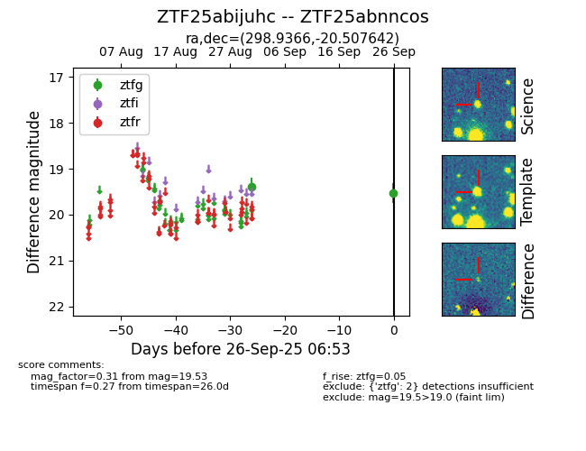

FINK: ZTF25abnncos
Lasair: ZTF25abnncos
ALeRCE: ZTF25abnncos
ZTF25abnncos (ztf,fink)
ZTF25abijuhc ()
equatorial (ra, dec) = (298.9366,-20.50764)
galactic (l, b) = (20.7968,-22.99129)

last ztfg=19.53
2 ztfg detections